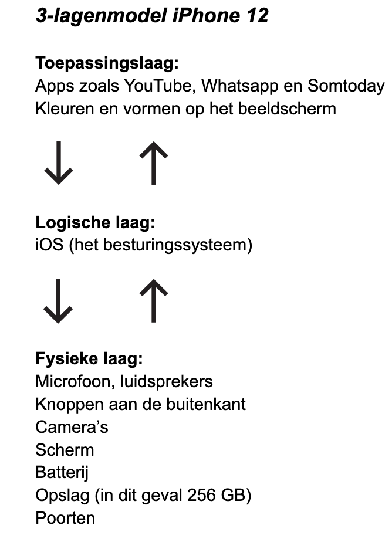

3-lagenmodel

Wat is het 3-lagenmodel?
Het 3-lagenmodel van een computer is een structuur
die helpt om de werking van een computer te begrijpen.
Het verdeelt de functionaliteit van een computer in drie hoofdcategorieën,
elk met zijn eigen verantwoordelijkheden en functies.
Deze lagen werken samen en maken de werking van een computer mogelijk.
Het begrijpen van dit model is nodig om in te zien
hoe computers werken en hoe ze met verschillende soorten software en hardware kunnen communiceren.
Hiernaast is een plaatje te zien van het 3-lagenmodel van een iPhone 12.